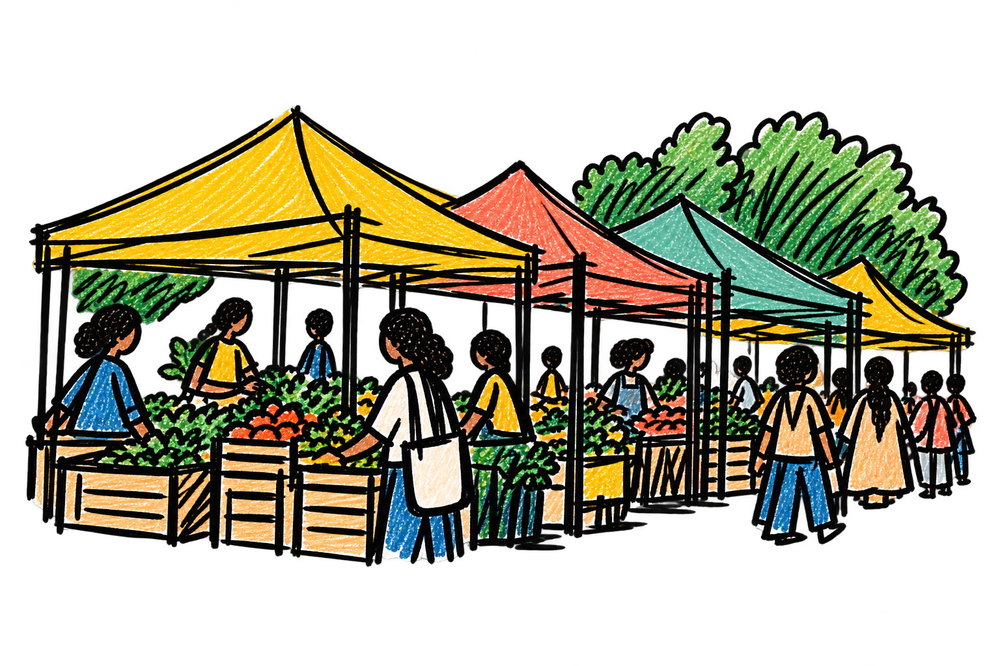
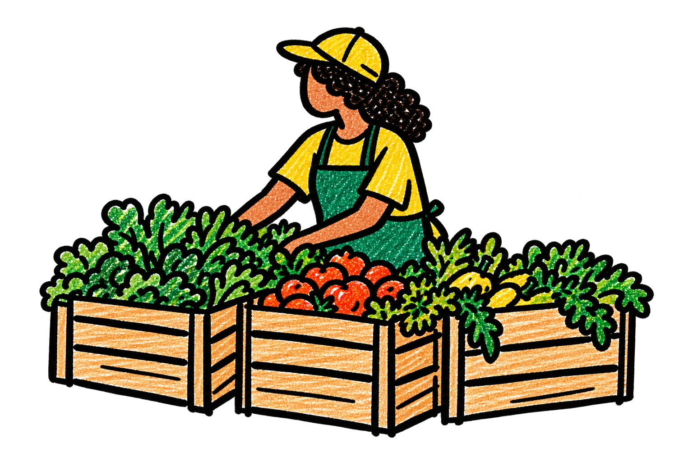
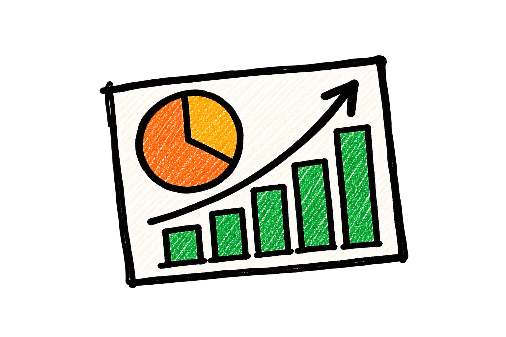

EL COMERCIO LOCAL TIENE MUCHO QUE OFRECER
Tu ciudad
tiene de todo.
Ahora sabes dónde encontrarlo.
Descubre los tianguis que se ponen hoy, encuentra productos cerca de ti y conoce a los comerciantes que mueven tu barrio.
✿
Más visibilidad para quienes venden.
Más opciones para
quienes compran.
BARRIO / 01 — MAPA LOCAL

● Abierto hoyMercado local
MAPA LOCAL✿COMERCIOS REALES✿COMUNIDAD CERCA✿MAPA LOCAL✿COMERCIOS REALES
01 / DESCUBRE TU CIUDAD
Cada día, un
tianguis diferente.
Cada puesto, algo por descubrir.
¿Dónde se pone el tianguis hoy? ¿Quién vende lo que buscas?
Explora los mercados de la Ciudad de México, consulta sus días de operación y descubre los productos y comerciantes que encuentras en cada uno.
Explorar tianguis ↗Mapa de tianguis de CDMX basado en datos públicos oficiales.
02 / ASÍ FUNCIONA BARRIO
Lo que mueve tu barrio,
ahora también está en línea.
Una forma sencilla de descubrir lo local y hacer visible cada negocio.



03 / PARA QUIENES HACEN BARRIO
Tu puesto merece
estar en el mapa.
No necesitas una tienda en línea para empezar a vender en digital.
Haz visible tu negocio, comparte lo que vendes y descubre herramientas para administrar mejor tu inventario y encontrar nuevas oportunidades.
Tu negocio, tus productos, tus clientes. Ahora también en BARRIO.04 / UNA CIUDAD QUE SE CONOCE MEJOR
Lo que antes no se veía,
ahora podemos entenderlo.
Cada comercio que se suma ayuda a construir una imagen más completa de la economía local: qué se vende, dónde se vende y cómo cambia la actividad comercial en la ciudad.
Información que puede abrir nuevas oportunidades para comerciantes, comunidades e instituciones.
Conocer BARRIO ↑BARRIO
El barrio ya existe.
Hagámoslo visible.
Encuentra lo que necesitas. Descubre quién lo vende. Haz crecer lo local.